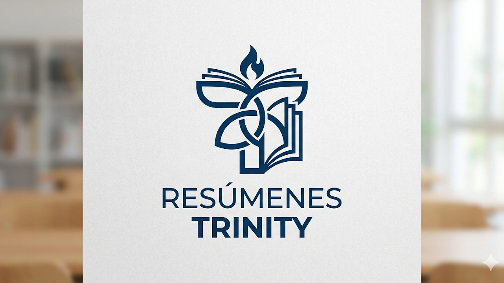

Sobre nosotros
Somos un grupo de alumnos del Holy Trinity College que trabaja por mejores sesiones de estudio y compartir nuestro contenido para maximizar el rendimiento de cada uno.
Accedé a resúmenes para organizar mejor tu estudio y enfocarte en lo que realmente importa: aprender.
Explorar resúmenes
Somos un grupo de alumnos del Holy Trinity College que trabaja por mejores sesiones de estudio y compartir nuestro contenido para maximizar el rendimiento de cada uno.
Si no entendés cómo usar la página todavía:
Resumenes Trinity™ es una pagina en desarrollo, y queremos ayudar a la mayor cantidad de personas posibles.
Si quieres ayudarnos, puedes mandarnos: